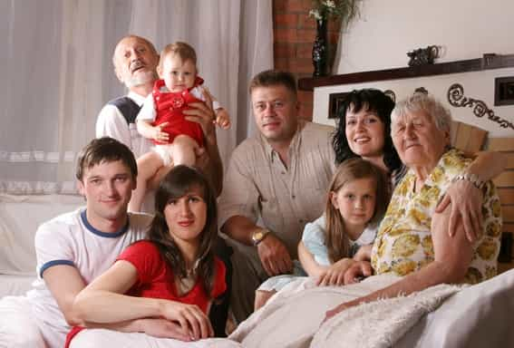

< < < Back
9 Cultural Elements To Consider Before Travelling Or Moving To Russia – Return Of Kings
The more degenerate Europe and the Anglosphere get, the more Russia pops up in conversations around Western men, as a possible destination for a long term stay.
Writing those lines as my plane lands home, concluding two weeks spent in provincial Russia, I realise that I was prone to idealise this country in my teens but after taking the red pill and visiting it a few times, I am much more objective about it and will now share notions that must be known before considering settling there.
1. Seeing many beautiful women is the norm
Women as a whole are just more numerous within Russian borders because they do not destroy themselves as much as they do in the USA. Girls in Russia take better care of themselves, are slimmer, and want to be genuinely beautiful according to universal standards (thin, long hair, nice skin with no tattoos etc). After the two world wars and its millions of young men dead, the Great Purge and criminality, alcoholism and drug abuse from the nineties onwards helped in creating a visible majority of women compared to men.
I also found out that Russian women generally age better, especially in their thirties and forties. Everywhere you look you see mothers that stay slim even after having children, as they did the intelligent choice of having them earlier than their Western counterparts. The savage concurrence of younger girls also keep wives and girlfriends on their toes as they can be replaced in eye blink.
2. Russians have their own notion of politeness
Educated Anglos say “Thank You” 24/7 while Russians only say it when their interlocutor did something genuinely nice. It seems that there is absolutely no need to be polite to someone you do not know.
Where the Englishman would apologise profusely and wait for you to move out of his path, the Russian would just say “Razreshajtje” (Allow me) and shove you out of his way. In the lift going to a club, I saw a French beta being elbowed in the ribs by a tiny girl in high heels because he did not move out of the way fast enough.
This roughness is also a trademark among the old, bitter babushkas. Asking about anything in an official building, the harpy will just point at a board and yell “You know how to read, don’t you?” Or when you want to buy something and ask “Excuse me, How much does it cost?”, she will tell you “Do I look like a shop clerk?” The three meanest creatures in Russian cities: cops in a bad mood, babushkas and stray dogs.
People also rarely smile, it’s normal. Smiling to strangers is seen as a sign of insincerity. If an unknown Russian girl maintains eye contact or smile at you, approach. It is a green light
But Russians have a better sense of punctuality. Meeting at 18.00 means everyone is present at 17.45. It’s “18.00, last call. 18.01 we are gone, son.” What I like is that everyone take their shoes off when entering one’s home and guests never show up without gifts and flowers.
3. Without money, you are nothing
A Russian mate told me that in the West, it is virtually impossible to die of hunger with all the governmental help that you can find, even without a penny. Folks at home have now idea how lucky they are and should be thankful every time their plate is full.
The cost of life there is ridiculous compared to the local salaries. The minimum wage in the third tier city I was in flirted with the 180 USD monthly while the prices for fruit, vegetables or meat could be the same as in the US or Western Europe. Only alcohol, tobacco products, petrol and rent were cheaper than in the West. When the cab driver charges you 2 dollars for a regular fare and that a kilo of cucumbers costs the same price, it makes you think.
Everything must be paid for. No healthcare, no help from the state, no concept of middle class. Either you are wealthy or you are destitute. People that contract cancer and do not have the means to pay for the drugs or chemo are left to die. In the grey Soviet blocks of flats, you can find both the wealthy man with his Mercedes and the couple of chronic alcoholics that survive on potatoes and have to shit in a bucket because the town hall cut the water in their flat.
Human life is cheap. The recent phenomenon of the “golden youth” (Золотая молодёжь) appears in large Russian cities. Sons and daughters of oligarchs, driving the latest sport cars, run over people while drunk. Daddy dearest usually pays off judges in millions of dollars for three or four homicides and his little treasure gets 60 hours of community service, cleaning the city’s public fountains. I heard many stories where you can off someone by paying the local police the sufficient amount of money
4. Of game, corruption and distrust

Game works there. With girls, officials or strangers. You can never have to much of it.
An acquaintance of mine was caught parking illegally. Angry old passers by called the cops after writing insults on his windshield. He had no insurance, it was not his car and he had only a French driver’s license. Cops got him for 10,000 RUB (175 USD at the time of my visit) to let him go but he had a written fine of 200 roubles for a invented infraction. The rest stayed in the cops’ pocket.
A friend gifted me with a taser flashlight. They spotted it at the metal detector in my luggage on the way to the plane. They reminded me that it was a weapon and that I should follow for investigation at the local precinct. We showed no emotions, saying that we did not know of the specific law being tourists and gave the taser and a thousand roubles. We went our way as I heard them playing with the taser in the distance. The cop’s son will have a nice gift but I did not give him the plug.
Everything can be bought and is negotiable. Wolf skins, mink furs, caviar, German cars, better exchange rate. If you know someone, can haggle and know game, you will live well.
When you are in your twenties or thirties and well dressed, girls will keep their guard up and will ask you why you are not married. They will sometimes suspect you of being married and lying about it. They will ask where you live, how long you are staying and cross check with what you said previously. Women there are master at analysing body language, frame, sense of style and the weight of a wallet. It is understandable in that environment.
Even young girls can give it all or test you and take you for a ride to enjoy your resources and give you nothing, if they feel that you will be easily plucked.
5. Russia is for the Russians

A majority of Russians seem to be very supportive of their government and president. It is unusual to observe both grandmas with portraits of Putin in their living room and teenage girls with Putin on the phone case of their last iPhone.
The television has at least three shows a day saying that Crimea is Russia, the radio says that gays are degenerates, calling out their propaganda and agenda sent from the West and pushing for it to be destroyed on the spot and everyone is on board.
At the same level of game, wealth, status or fitness, local men will always be chosen by Russian girls over foreigners. If you want to become Russian, you must assimilate. Foreigners and migrants have no organizations or programs to help them blend in. They must do it on their own if they want recognition.
Immigrants of a lower to normal social status, from Central Asia or the Caucasus, will always adopt a low profile in the street preventing the local Slavs to lash at them or attack them physically.
6. Extreme disparity between men and women
Local older men with zero game, shitty fashion style and zero fitness can bang the highest quality if they flaunt their money . You can be a pitukh (a “rooster”, slang for a drunk or a loser) as long as people feel that you have cash.
Not even ugly, but plain girls are almost invisible to the local men, like furniture. Beautiful women understand that they are legion in Russia and that age or a bit of attitude can get them nexted so they are kept in line. You will spot men looking like root vegetables walking with a stylish beauty queen with a flawless figure on their arm.
A well dressed foreigner with a good level of fitness, that speaks fluent Russian and has a normal (and upper) financial status would absolutely trample the bulk of the Russian male population any day of the week. In smaller cities, day game is something unheard of.
7. On sports
It is not a culture but a cult. Sport has a special status of prestige and almost every one takes interest in it. Old Soviet habits die hard. There is no better way to start a social circle than signing up at the local sports club. Gyms are a relatively new fashion, people can rarely afford them and prefer to train outside or compete a living opponent. Old school sportsmen are highly hostile to supplements and protein shakes.
People that teach sports are authorities in the matter and must have been “MasterSport” of the Soviet Union or Russia or have won a few World titles to have any credibility to teach. The idea of a McDojo would not last long there.
I had the luck of attending a few sessions at a local Sambo club. Where everywhere in the West, I would have to show my ID, prove that I am insured and have a written note from my physician, the Russian instructor asked my name, shook my hand and told me to start warming up.
He was 69 years old, four times World Champion and had a grip that could bend iron. He taught us his favourite techniques, slapping us on the head when we were not doing it properly and had a “no bullshit” approach aimed at efficiency in combat. His son was also a World Champion and so were a few of his students.
8. Difference between the family sphere and strangers

In the olden days when the State, institutions or your common man could absolutely not be trusted, the only circle you could count on was the immediate family. Russians kept this trait in their ethos to this day. Strangers, neighbors will always be suspicious when they do not know you and would be the first to hold your head under the water if they can profit from it.
But if you are accepted in the intimate circle of friendship, they would give you their last crumb of bread and you will make friends for life. My local friend’s uncle would give me everything because I am known and in the circle but would roll over slow pedestrians crossing the road with his Gelik if he was late. This is the same with your landlord or the plumber.
The quality of the work is rarely checked when it comes to the normal standard of life and you must pay to get acceptable service.
9. Work ethic
Some people just do not give a shit. Cops smoke on the job, bus drivers are drunk, clerks sleep everywhere at their desk or are on the phone even if you are here to buy them things.
The workers will paint lines on a dirty road, over stones and garbage. It will be gone after the next rain but no one cares. Their job here is done. Customer satisfaction for the general public is a foreign notion and the minimum effort and service is what they look for. To get acceptable service, you must upgrade and pay for it.
Every space designed for the population is rusty, painted in a hurry, peppered with holes. Ceilings are leaking, naked electric cables show everywhere. Flower pots are made of empty oil barrels cut in half or buried tire trucks painted in yellow or blue mark the limit of the children’s playground.
It is an architect’s nightmare. The state of roads, curbs and buildings are often a joking matter among the locals. It will affect your everyday live and is worth considering if you like a cosy lifestyle or think about raising children there.
La Russie est une autre planète
With its long-legged girls, traditional values and endless stretches of land, it would sound like a great base for those who believe in the concepts of masculinity. But this place is another universe with its own rules.
You can not do what you want and thinking about your future or the future of a hypothetical family in Russia, you must understand that you might give up a safe, comfortable life accessible to everyone for a world with a radically different mindset and a lower standard of comfort that only large amounts of money can buy.
Think hard and choose wisely.
Read More: Why Russia Is Becoming A More Attractive Place For Neomasculine Men To Call Home


{kind=link}
{kind=link}